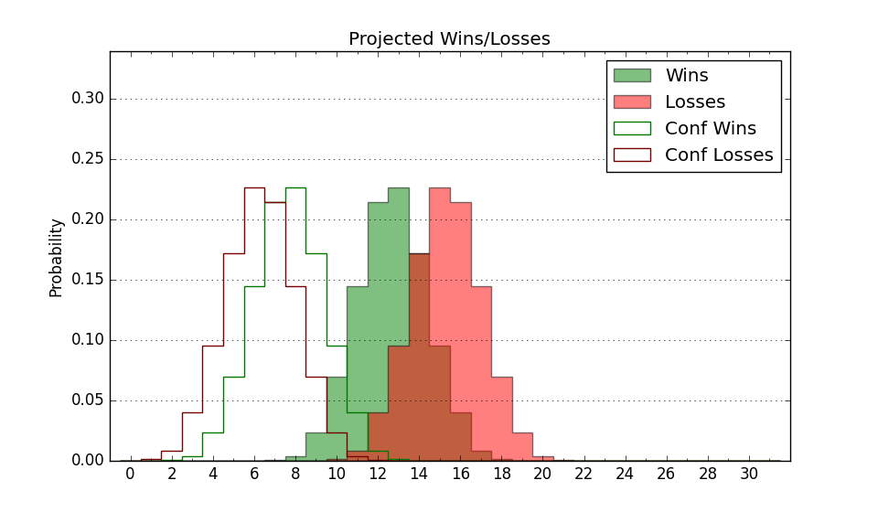

| Home | Game Probabilities | Conferences | Preseason Predictions | Odds Charts | NCAA Tournament |
| City: | Dover, Delaware | |
| Conference: | Mid-Eastern (1st)
| |
| Record: | 2-0 (Conf) 7-9 (Overall) | |
| Ratings: | Comp.: -14.9 (318th) Net: -14.7 (315th) Off: 92.1 (335th) Def: 106.8 (232nd) SoR: 0.0 (194th) |
| Remaining | ||||||
|---|---|---|---|---|---|---|
| Date | Opponent | Win Prob | Pred. | |||
| 1/20 | Md Eastern Shore (344) | 76.5% | W 71-63 | |||
| 1/27 | South Carolina St. (337) | 72.2% | W 77-70 | |||
| 1/29 | North Carolina Central (266) | 50.2% | W 68-67 | |||
| 2/3 | @ Norfolk St. (212) | 15.1% | L 62-74 | |||
| 2/5 | Howard (252) | 45.0% | L 72-74 | |||
| 2/17 | @ Coppin St. (357) | 57.4% | W 63-61 | |||
| 2/19 | Morgan St. (353) | 80.0% | W 78-67 | |||
| 2/24 | @ South Carolina St. (337) | 43.3% | L 72-74 | |||
| 2/26 | @ North Carolina Central (266) | 22.8% | L 64-72 | |||
| 3/2 | Norfolk St. (212) | 37.7% | L 66-70 | |||
| 3/4 | @ Howard (252) | 19.4% | L 68-78 | |||
| 3/7 | @ Md Eastern Shore (344) | 48.9% | L 67-68 | |||
| Previous | Game Score | |||||
| Date | Opponent | Win Prob | Result | Off | Def | Net |
| 11/6 | @Penn St. (97) | 5.4% | L 45-79 | -27.5 | 11.4 | -16.2 |
| 11/10 | @Texas (50) | 2.5% | L 59-86 | -2.8 | -0.1 | -2.9 |
| 11/15 | Delaware (131) | 23.0% | L 67-78 | 5.9 | -10.6 | -4.7 |
| 11/17 | (N) Grambling St. (324) | 52.4% | W 71-63 | -0.9 | 11.5 | 10.5 |
| 11/20 | @NJIT (327) | 40.2% | L 72-81 | 0.1 | -9.7 | -9.6 |
| 11/24 | @Longwood (143) | 9.3% | L 82-84 | 6.5 | 2.0 | 8.6 |
| 11/25 | (N) Bethune Cookman (336) | 58.3% | W 72-64 | 2.3 | 5.8 | 8.1 |
| 11/26 | (N) Lamar (275) | 36.8% | L 81-84 | 7.2 | -3.6 | 3.6 |
| 11/30 | @Chicago St. (292) | 28.2% | W 76-69 | 15.9 | 7.4 | 23.3 |
| 12/2 | @Loyola MD (335) | 42.7% | W 79-73 | 16.6 | -5.1 | 11.6 |
| 12/9 | Longwood (143) | 26.0% | L 61-62 | -6.6 | 15.0 | 8.4 |
| 12/18 | @Wake Forest (52) | 2.6% | L 59-88 | -6.3 | -3.1 | -9.5 |
| 12/20 | @East Carolina (188) | 13.3% | L 50-79 | -18.0 | -10.2 | -28.1 |
| 12/30 | Mount St. Mary's (228) | 41.7% | W 77-73 | 8.9 | -6.7 | 2.2 |
| 1/6 | Coppin St. (357) | 82.1% | W 55-53 | -9.3 | -2.9 | -12.2 |
| 1/8 | @Morgan St. (353) | 54.1% | W 78-66 | 6.2 | 7.7 | 13.9 |
| Stats & Trends | |||||
|---|---|---|---|---|---|
| Current | Day | Week | Month | Season | |
| Composite | -14.9 | +0.0 | +0.1 | -3.1 | +1.2 |
| Comp Rank | 318 | +1 | +1 | -27 | +23 |
| Net Efficiency | -14.7 | +0.0 | +0.1 | -4.3 | -- |
| Net Rank | 315 | -1 | -2 | -35 | -- |
| Off Efficiency | 92.1 | -0.0 | +0.2 | -1.1 | -- |
| Off Rank | 335 | -- | +1 | -19 | -- |
| Def Efficiency | 106.8 | +0.0 | -0.0 | -3.2 | -- |
| Def Rank | 232 | +2 | +3 | -54 | -- |
| SoS Rank | 307 | +1 | +8 | -30 | -- |
| Exp. Wins | 12.7 | +0.0 | +0.0 | +0.1 | +2.7 |
| Exp. Conf Wins | 7.7 | +0.0 | +0.0 | -0.0 | +1.8 |
| Conf Champ Prob | 7.7 | -0.1 | -0.2 | -3.1 | +2.2 |

| Advanced Stats | ||
|---|---|---|
| Stat | Value | Rank |
| Off Eff FG % | 0.431 | 352 |
| Off Ast Ratio | 0.115 | 328 |
| Off ORB% | 0.298 | 116 |
| Off TO Rate | 0.166 | 284 |
| Off FT Ratio | 0.310 | 225 |
| Def Eff FG % | 0.558 | 346 |
| Def Ast Ratio | 0.169 | 341 |
| Def ORB% | 0.270 | 163 |
| Def TO Rate | 0.177 | 36 |
| Def FT Ratio | 0.388 | 295 |